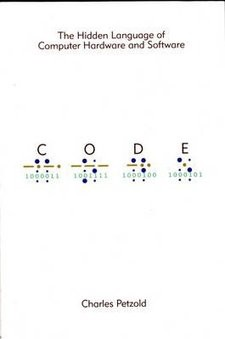
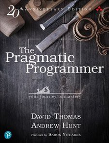
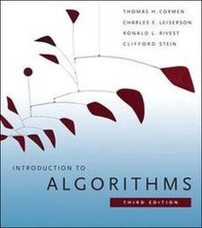
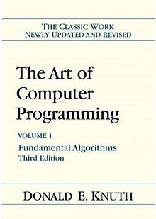
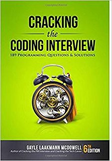
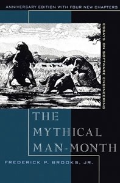
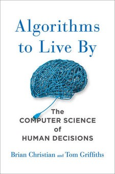
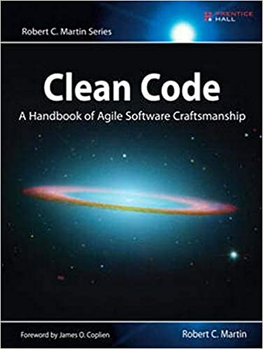
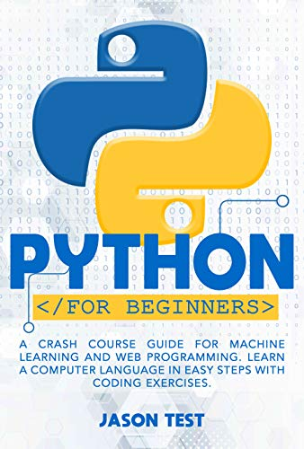

1. Code: The Hidden Language of Computer Hardware and Software

This book will not teach you how to program, nor how to land a job in the tech industry.
It is, on the other hand, the first step toward that journey. Plenty of times I have seen people struggling with programming because they are lacking the necessary tech-savvy to get things done. This book solves this problem.
“A computer processor does moronically simple things — it moves a byte from memory to register, adds a byte to another byte, moves the result back to memory. The only reason anything substantial gets completed is that these operations occur very quickly. To quote Robert Noyce, ‘After you become reconciled to the nanosecond, computer operations are conceptually fairly simple.’”
Even if you have been working with computers for a long time, there is a chance that Petzold can teach you something new or at least show you something from a perspective you had not considered before.
This is an entry point to all things tech, and it is necessary to complete your education as an accomplished programmer.
2. The Pragmatic Programmer

In this book, Andrew Hunt and Dave Thomas give the readers a series of tips on improving their programming output.
These tips are mostly centered around the principle that programming is, at its core, a collaborative pursuit. If you aspire to work as a software engineer or programmer of any kind, much of the code that you will be working with will not be yours. Hunt and Thomas’s tips guide you through working in such an environment.
Their tips are practical and are best learned through practice. When you pick up the book, try to go slowly and reflect on the authors’ advice the next time you are programming. This is not a one-time read, but rather a workshop in good practices.
“The Pragmatic Programmer” offers invaluable advice for anyone working with code, and it should be in every programmer’s library.
3. Introduction to Algorithms

If you have a bachelor’s degree in computer science, you probably know this one already. You have probably gone through some of the exercises as well. If you haven’t, bear with me.
It may seem daunting to go through a book like this without an instructor, but the good thing about not being in school anymore is that you get to take your time. Regardless of how long you take, the basic data structures and algorithms presented in this book are invaluable to any programmer serious about their career development.
Sure, you can survive a few years working as a software engineer without remembering the time complexity of QuickSort. You can survive without being able to code a DFS without pasting it from Stack Overflow or using a built-in library.
But the concept of not needing data structures and algorithms past school is juvenile. They are the tools with which programmers solve problems. They are the bread and butter of the modern software engineer.
You cannot hope to progress as a programmer, software engineer, or computer scientist if you are not familiar with the contents of this book (or the algorithms book of your choice).
4. The Art of Computer Programming: Volume 1

Much like with the previous entry in this list, getting through “The Art of Computer Programming” is a daunting task. Few have managed to go through the entire book consistently. Even fewer have taken the time to go through all the math in the first few chapters.
I haven’t gone through the entire tome, but I still could not recommend it more. It has its problems, mostly with respect to how well Knuth’s MIX language holds up for the modern audience, but if you move past that, he provides incredible insight and depth into the basic algorithms and data structures.
This book is a true challenge of intellect and perseverance, but it is also the source of a huge wealth of information. Bill Gates himself said that if you finish this book you should send him a resume. Worth the try, right?
5. Cracking the Coding Interview

Looking to land a job as a software engineer? Whatever your answer may be, this book is still worthwhile.
While algorithms and data structure textbooks are essential reads, they provide little to no actual practice. I am aware that both books I listed right before this one have myriad exercises for each concept they introduce, but there’s a catch: You always know what tool to use.
In the real world, software problems don’t come with a hint for what data structure, algorithm, or technique to use.
After explaining the basic data structures and algorithms (and by the way, don’t skip straight to this book), the author includes two extra sections at the end of the book, listing problems of medium and hard difficulty.
These problems come in random order and challenge the reader to figure out the best approach to solve them. If you had been paying attention while going through the earlier chapters, you would have picked up on the different patterns and cues when it comes to choosing the right data structure or algorithm to solve a problem.
This book makes you a better problem solver within the context of computer programming, so it is essential, even if you are not planning on interviewing any time soon.
6. The Mythical Man-Month

This historic book about software engineering takes the spot of the must-read book about managing a software project.
If you are planning on working with a team of engineers, the concepts introduced in this book will broaden your perspective about what works and what doesn’t in the context of developing software.
The core message is that software engineering is not directly comparable to other disciplines in which manpower is directly interchangeable with time. If anything, Brooks claims that the opposite holds true. “Good cooking takes time. If you are made to wait, it is to serve you better, and to please you,” Brooks quotes as a subtitle to the second chapter of the book.
This and a dozen other essays on software engineering practices serve to illuminate any programmer on pitfalls within the discipline. This is a book to read as a way of ensuring that you are not misunderstanding your role as part of your team, organization, and tech industry as a whole.
It is a great book to read and then subtly recommend to your manager.
7. Algorithms to Live By

The last book on this list is not entirely linked to writing code, but rather to examining the problem-solving techniques derived from the design of certain algorithms (which, by getting this far down the list, you have probably already encountered).
The authors of this book make a brilliant connection between human psychology and computer science, linking the rationale behind a few hand-picked algorithms to everyday problems.
It is not uncommon for programmers to sometimes doubt how applicable the concepts they are learning are outside of writing code on a computer. Fortunately, Christian and Griffiths provide an answer to this, applying common algorithms to non-computer science problems and quantifying the answers to everyday concerns.
While learning to use algorithms and data structures for the purpose of writing better code is a worthwhile pursuit, learning how to use them in a context outside of the text editor makes it that much more fun to study them. Giorgos Petkakis is a graduate student at the University of Copenhagen. He writes about technology, culture, and education.
8. Clean Code – Robert Cecil Martin

Even bad code can function. But if code isn’t clean, it can bring a development organization to its knees. Every year, countless hours and significant resources are lost because of poorly written code. But it doesn’t have to be that way.
Noted software expert Robert C. Martin presents a revolutionary paradigm with Clean Code: A Handbook of Agile Software Craftsmanship . Martin has teamed up with his colleagues from Object Mentor to distill their best agile practice of cleaning code “on the fly” into a book that will instill within you the values of a software craftsman and make you a better programmer—but only if you work at it.
What kind of work will you be doing? You’ll be reading code—lots of code. And you will be challenged to think about what’s right about that code, and what’s wrong with it. More importantly, you will be challenged to reassess your professional values and your commitment to your craft.
Clean Code is divided into three parts. The first describes the principles, patterns, and practices of writing clean code. The second part consists of several case studies of increasing complexity. Each case study is an exercise in cleaning up code—of transforming a code base that has some problems into one that is sound and efficient. The third part is the payoff: a single chapter containing a list of heuristics and “smells” gathered while creating the case studies. The result is a knowledge base that describes the way we think when we write, read, and clean code.
This book is a must for any developer, software engineer, project manager, team lead, or systems analyst with an interest in producing better code.
9. The Self-Taught Programmer - Cory Althoff
 I am a self-taught programmer. After a year of self-study, I learned to program well enough to land a job as a software engineer II at eBay. Once I got there, I realized I was severely under-prepared. I was overwhelmed by the amount of things I needed to know but hadn't learned yet. My journey learning to program, and my experience at my first job as a software engineer were the inspiration for this book.
I am a self-taught programmer. After a year of self-study, I learned to program well enough to land a job as a software engineer II at eBay. Once I got there, I realized I was severely under-prepared. I was overwhelmed by the amount of things I needed to know but hadn't learned yet. My journey learning to program, and my experience at my first job as a software engineer were the inspiration for this book.
This book is not just about learning to program; although you will learn to code. If you want to program professionally, it is not enough to learn to code; that is why, in addition to helping you learn to program, I also cover the rest of the things you need to know to program professionally that classes and books don't teach you. "The Self-taught Programmer" is a roadmap, a guide to take you from writing your first Python program, to passing your first technical interview. I divided the book into five sections:
1. Learn to program in Python 3 and build your first program.
2. Learn Object-oriented programming and create a powerful Python program to get you hooked.
3. Learn to use tools like Git, Bash, and regular expressions. Then use your new coding skills to build a web scraper.
4. Study Computer Science fundamentals like data structures and algorithms.
5. Finish with best coding practices, tips for working with a team, and advice on landing a programming job.
You CAN learn to program professionally. The path is there. Will you take it?
10. PYTHON FOR BEGINNERS - Jason Test

Are you looking for a super-fast computer programming course?
Then keep reading.
You will learn Python’s powerful applications in an extremely short time. You will also learn all the best tricks of writing codes.
Examples and step-by-step guides will guide you during the code-writing learning process.
Even if you have never written a programming code before, you will quickly grasp the basics thanks to visual charts and guidelines for coding.
Then, if you really wish to explore the world of python, learn and master its language,